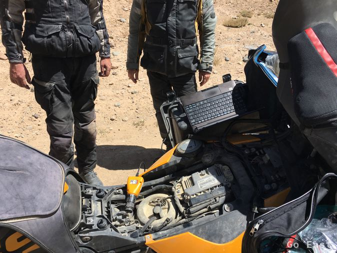
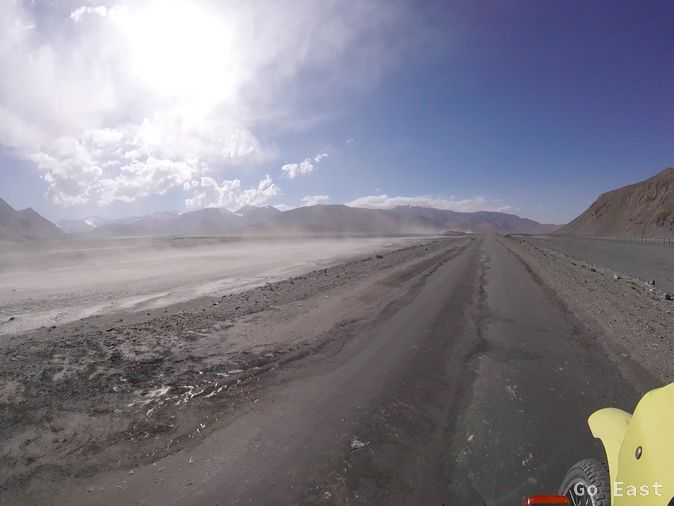
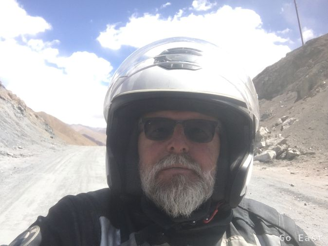

Ich trinke nur Tee zum Frühstück und kann nichts essen, da ich sehr unruhig geschlafen habe. Wir packen und fahren zur Tanke. Es ist frisch und ich habe mir über das T-Shirt noch ein Flies angezogen. Sprit gibt es aus dem Fass, da die Pumpe keinen Strom hat. 20 l reichen und wir machen die Tanks nicht voll, um die Motorräder nicht zu schwer zu machen, da wir nicht wissen, wie der Straßenzustand sein wird. Martin und Andre fahren schon mal vor.
Die Landschaft ist überwältigend und die Straße wechselt von welligem Asphalt bis Wellblech. Bei einer Fotopause kommt ein Taxi mit dem Paar aus dem Zillertal vorbei, das wir schon vorher getroffen hatten. Man trifft sich eben immer wieder. In einem Wellblechabschnitt sehen wir plötzlich Andre stehen, der seine Maschine schon abgeladen hatte. Sein Motor springt nicht mehr an. Mit Diagnosesoftware und Laptop stellt er fest, dass die Benzinpumpe defekt ist. Gemeinsam wird eine neue Pumpe, die er glücklicherweise dabei hat, in den Tank eingesetzt und es kann weitergehen.

Unterwegs sehen wir vereinzelt Jurten stehen und Hirten mit Rindern. Wir erreichen den Karakul See. Die Farben sind unwirklich. Helles Türkis, eingerahmt in Gebirgsketten. In einem Homestay kehren wir ein und bekommen Suppe und Tee, was uns wieder neue Kräfte gibt.


Wir klettern den Ak-Baital-Pass auf 4.655 Meter hinauf und begegnen auch wieder zahlreichen Fahrradfahrern. Mehr als Motorrädern. Ich blase mein Horn und bekomme keinen Ton heraus, leider.

Es sind zwei Flussdurchfahrten zu meistern. Das Wasser ist nicht sehr hoch und so ging es jedesmal gut. Brücken sind weggerissen. Mindestens 5 Murmeltiere waren zu sehen. Sie haben im Gegensatz zu unseren in Europa ein ganz goldfarben schimmerndes Fell.
Es geht über den Kyzyl-Art-Pass mit 4.250m.
Nach dem Pass kommt die Grenzstation von Tadschikistan. Die Abfertigung geht schnell vonstatten und dann geht es bestimmt 10km durch Niemandsland auf glücklicherweise trockener und steiler Erdpiste und Wellblech zur Grenzstation von Kirgistan. Abfertigung auch hier schnell, mit Computererfassung und Bildaufnahme. Die Uhr wird eine Stunde vorgestellt.
Die Straße wird langsam besser und läßt einen Schnitt von 70km/h zu, wobei auf die teilweisen tiefen Schlaglöcher geachtet werden muss. Wir steigen weiter ab auf ca. 3.600m in eine Ebene. Unglaublich der Blick zurück auf die schneebedeckten Gipfeln des Pamirgebirges. In der weiten Ebene gibt es wieder Jurten mit berittenen Teenagerhirten, die Esel, Rinder und Pferde in Schach halten. Andre hat eine Adresse von einem Guesthouse, das in maps.me, einer Navi-App für das Smartphone, empfohlen wird. So steuern wir das Guesthouse Muras in Sary-Tash an.
Viele interessante Leute sind da. Radler aus Belgien, die nach Kanada ausgewandert sind und mit fat-bikes nun unterwegs nach Myanmar sind. Ein Paar aus der Schweiz, die in Richtung Murghab unterwegs sind und gegen später kommt noch ein Brasilianer aus Rio auf einer 650er BMW. Er ist schon 2 Jahre unterwegs und möchte nach Russland und Japan. Wir essen alle an einem langen tiefen Tisch und haben eine sehr interessante internationale Unterhaltung.